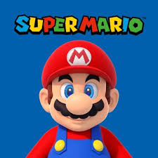

Accessibility and simplicity
Nintendo's focus on accessibility and simplicity in its games, such as Wii Sports and Mario Kart, attracts casual gamers who may not be regular players but enjoy easy-to-learn.
Intuitive controls
The intuitive controls of Nintendo consoles, like the Wii Remote and Joy-Cons, make it easy for casual gamers to pick up and play without feeling overwhelmed by complex mechanics.